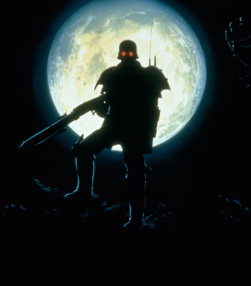

| Panzergrenadiers |
|
|  | |
General and Technical Data |
|
|
Unit type: all purpose special forces Unit size: 6 men Armament: Panzergrenadier Armor, Steyr TMP, Grenades, XM8, MG3, PZF 3 |
|
| Technical and Historical Notes | |
|
Deep within the bowels of Side 3, Zeon engineers were trying to come up with ways to defeat the Earth Federations military might long before the victories of Lourm and the Earth Drop Operations, and even before the invention of the mobile suit. It was quickly realized that the Duchy would be unable to successfully take and control space colonies without an infantry force capable of assaulting and defeating a space colony without landing there on an easily destroyed shuttle.
Originally this project was slated to the MAF, who trained an elite corps of zealot marines to use armored normal suits and heavy weaponry to storm colonies and flush out resistance in a colony that had recently been gassed. After the end of January 0079, Kycillia thought the purpose of this task force was completed and had it disbanded, wishing to focus research on more advanced mobile suits and Flanagans newtype research. Seeing the potential in the project Kycillia had left behind, Gihren quickly picked it up, hand picking and retraining the remainder of these marines into his new SS's personal infantry force. The Panzergrenadier was born. The armored suit worn by Panzergrenadier is perfectly functional outside of an atmosphere, with a twelve hour reserve supply of oxygen, and has built in slots for a propellent pack and extra fuel cells on the backpack. Each unit has a short wave radio system, allowing marines to speak to each other in a vacuum under a light minovski environment. Visuals can be switched between standard, infrared or nightvision. The armor is thick enough to resist small arms fire, but the joints are unarmored for reasons of mobility. Panzergrenadiers are known to use heavy machineguns in space, the weight of the weapon inconsequential in that environment. On Earth they generally exchange these for smaller rifles. Units will use the extremely expensive portable railguns for fighting enemy mobile suits, and panzergrenadiers are known to kill Type 61s and even GMs if they catch them by surprise. There are less than 500 Panzergrenadiers in service in the Zeon military, with small forces stationed at Zum City, Granada, Solomon, California Base, Lhasa and Odessa as Gihrens personal forces. They are absolutely loyal, and will kill themselves for their fuehrer at his request. Other groups of Panzergrenadiers act as Black Ops forces, using Jukons and black Musais for covert operations. |
 RPG quick stats sheet
RPG quick stats sheet